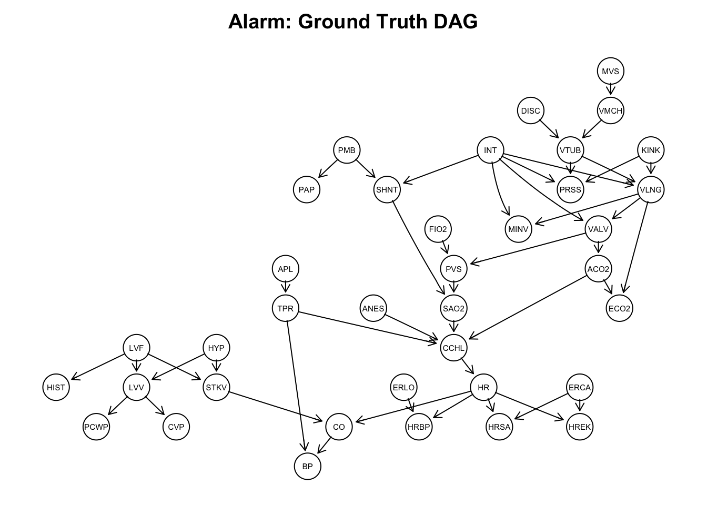
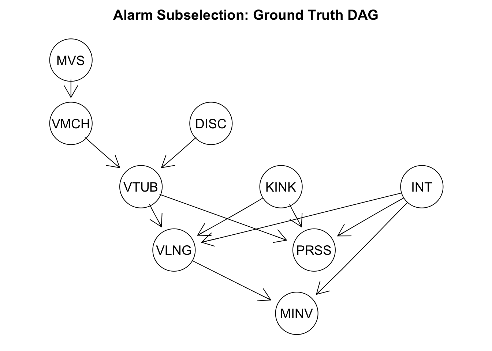
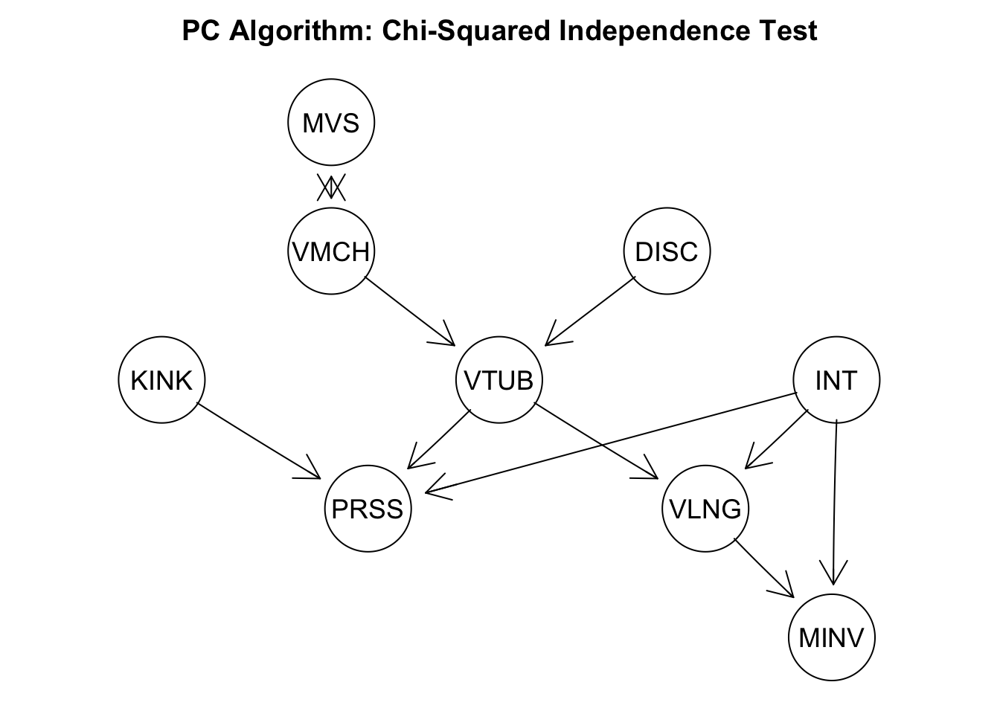
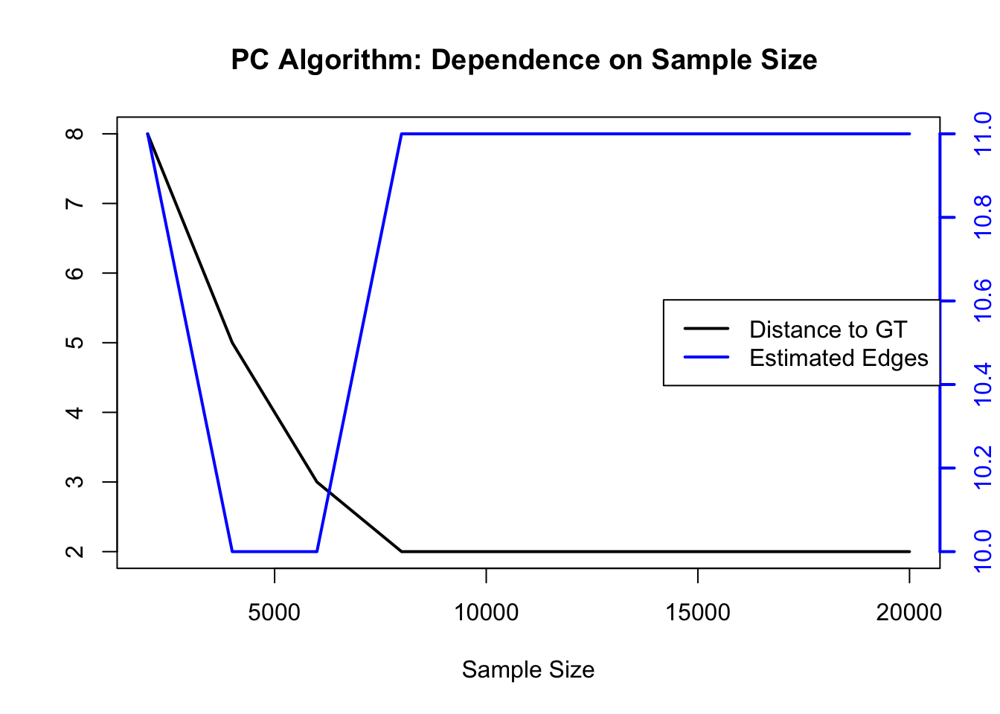

library(zen4R) # download files from Zenodo
library(bnlearn) # read ground truth graph
library(pcalg) # PC Algorithm implementation
library(Rgraphviz) # plot graphs
library(MVN) # multivariate normal testPC Algorithm for Causal Discovery
This notebook presents and applies the structure learning PC algorithm on the alarm dataset. The PC algorithm was introduced by Peter Spirtes and Clark Glymour [1] to infer a graphical structure to a distribution. (Conditional) independencies hold in the distribution if paths in the associated graph are blocked (d-separation). The converse statement is called faithfulness. The PC algorithm starts with a complete graph and removes edges by testing (conditional) independencies. The key assumption of the PC algorithm is that all revelant and influencing variables are measures, a.k.a. ’no unmeasured confounding. Directed edges encode causality, a non-symmetric generalization of conditioning.
Loading the Alarm Dataset and its DAG
We apply the algorithm on the alarm dataset [2] of size 37 x 20,000. It can be downloaded from the Zenodo ‘Graphical Modelling and Causal Inference’ (https://zenodo.org/records/14793281) community under the CC0 License.
# Load Data
zenodo <- ZenodoManager$new(logger = NULL)
record <- zenodo$getRecordByDOI("10.5281/zenodo.14793281")
files <- record$listFiles(pretty = TRUE)
alarm <- as.matrix(read.csv(files[2, 4]))
temp_bif <- tempfile(fileext = ".bif")
download.file(files[1, 4], temp_bif, mode = "wb")
graph <- as.graphNEL(read.bif(temp_bif))
# Preprocessing
alarm <- as.matrix(read.csv(files[2, 4]))
alarm[alarm == "FALSE"] <- 0
alarm[alarm == "TRUE"] <- 1
alarm[alarm == "ZERO"] <- 0
alarm[alarm == "LOW"] <- 1
alarm[alarm == "NORMAL"] <- 2
alarm[alarm == "HIGH"] <- 3
alarm[alarm == "ONESIDED"] <- 3 # Variable INT: NORMAL < ONESIDED < ESOPHAGEAL
alarm[alarm == "ESOPHAGEAL"] <- 4
alarm <- apply(alarm, 2, as.numeric)
alarm <- apply(alarm, 2, function(x) x - min(x))The underlying ground truth directed acyclic graph (DAG) is given in the plot below. It is the DAG visualizing the structural equation model generating the observational dataset. All collumns represent patient measurements and status of clinial treatment machines.
A <- amat(read.bif(temp_bif))
alarm_names <- c("HIST", "CVP", "PCWP", "HYP", "LVV", "LVF", "STKV", "ERLO",
"HRBP", "HREK", "ERCA", "HRSA", "ANES", "APL", "TPR", "ECO2",
"KINK", "MINV", "FIO2", "PVS", "SAO2", "PAP", "PMB", "SHNT",
"INT", "PRSS", "DISC", "MVS", "VMCH", "VTUB", "VLNG", "VALV",
"ACO2", "CCHL", "HR", "CO", "BP")
colnames(A) <- alarm_names
rownames(A) <- alarm_names
ground_truth <- as(A, "graphNEL")
amat_gt <- as(ground_truth, "matrix")
pcalg::plot(ground_truth, main = "Alarm: Ground Truth DAG")
For demonstration purposes, we restrict the dataset to the ancestral set of ‘MINV’. Note that the number of DAGs on n nodes grows super-exponentially (https://oeis.org/A003024) and that there are more than 800 Billion DAGs on 9 node.
sub_names <- c("MVS", "VMCH", "DISC", "VTUB", "PRSS", "KINK", "VLNG", "INT",
"MINV")
sub_alarm <- alarm[, sub_names]
sub_gt <- as(A[sub_names, sub_names], "graphNEL")
amat_sub_gt <- as(sub_gt, "matrix")
pcalg::plot(sub_gt, main = "Alarm Subselection: Ground Truth DAG")
PC Algorithm: Oracle Conditional Independence Test
Without further assumptions, it is not possible to identify the presented DAG, which is why the PC algorithm returns a completed partially directed acyclic graph (CPDAG). Each CPDAG represents a class of DAGs where the undirected edges have to be appropriately directed. The following code chunk gives the best possible PC algorithm outcome by taking the implied condition independencies from the graph above instead of testing any hypothesis.
ci_test_dsep <- function(ground_truth, var_names) {
function(x, y, S, suffStat) {
is_indep <- dsep(var_names[x], var_names[y], var_names[S], ground_truth)
return(as.numeric(is_indep))
}
}
pc_oracle_fit <- pc(suffStat = list(),indepTest = ci_test_dsep(sub_gt, sub_names),
alpha = 0.5, # irrelevant since ci_test_dsep() returns either 0 or 1
labels = sub_names)
plot(pc_oracle_fit@graph, main = "PC Algorithm: Oracle Independence Test")
This returned CPDAG is very similar to the ground truth DAG. Only the edge between ‘MVS’ and ‘VMCH’ can not be oriented. One criterion to quantify the distance between CPDAGs is to calculate the 1-norm of the corresponding adjacency matrices.
distance_to_gt <- function(fit, amat_gt) {
amat_est <- as(fit@graph, "matrix")
amat_est <- amat_est[rownames(amat_gt), colnames(amat_gt)]
sum(abs(amat_gt - amat_est))
}
distance_to_gt(pc_oracle_fit, amat_sub_gt)[1] 1PC Algorithm: Chi-Squared Independence Test
As our data is discrete with at most 4 levels, we choose the Chi-Squared independence test as the criterion to remove edges with the PC algorithm. Any rank test allowing for two discrete variables is possible as well. If the data is continuous and normal, ‘gaussCItest’ can be selected. A non-parametric, however computationally more demanding, alternative by kernel testing with, e.g., the ‘dHSIC’ package.
suffStat <- list(dm = as.data.frame(sub_alarm), nlev = apply(sub_alarm, 2, function(x) length(unique(x))), adaptDF = FALSE)
pc_fit <- pc(suffStat,
indepTest = disCItest,
alpha = 0.01,
labels = sub_names)
pcalg::plot(pc_fit, main = "PC Algorithm: Chi-Squared Independence Test")
We selected the alpha value to be 0.01 as the threshold to compare p-values against. The returned CPDAG is missing the connection between “KINK” and “VLNG” but is otherwise correct. Hence, we were able to nearly recover the correct structure from 20,000 samples. Whether missing an edge or estimating an irrelevant one is worst is use-case specific. Usually however, we recommend overestimating the graph and pruning edges via auxiliary experiments in a later stage. This is specified by the alpha value, where a smaller alphas return denser graphs.
PC Algorithm: Dependendce on Sample Size
To demonstrate the behavior of increasing testing power, we scale the dataset and visualize the distance of the estimated graph to the ground truth. Note that the lower bound is 1 given by the oracle PC algorithm.
sample_size <- seq(2000, 20000, by = 2000)
dist_to_gt <- c()
n_est_edges <- c()
for (i in 1:length(sample_size)) {
suffStat <- list(dm = as.data.frame(sub_alarm[1:sample_size[i], ]), nlev = apply(sub_alarm, 2, function(x) length(unique(x))), adaptDF = FALSE)
pc_fit <- pc(suffStat, indepTest = disCItest, alpha = 0.01, labels = sub_names)
amat_est <- as(pc_fit@graph, "matrix")
amat_est <- amat_est[sub_names, sub_names]
dist_to_gt <- c(dist_to_gt, distance_to_gt(pc_fit, amat_sub_gt))
n_est_edges <- c(n_est_edges, sum(amat_est))
}
plot(sample_size, dist_to_gt, type = "l", xlab = "Sample Size", ylab = "",
main = "PC Algorithm: Dependence on Sample Size ", lwd = 2)
par(new = TRUE)
plot(sample_size, n_est_edges, type = "l", axes = FALSE, xlab = "", ylab = "",
col = "blue", lwd = 2)
axis(side = 4, col = "blue", col.axis = "blue", lwd = 2)
legend("right", legend = c("Distance to GT", "Estimated Edges"),
col = c("black", "blue"), lty = 1, lwd = 2)
The plot indicates a very good estimation performance from 8,000 samples onwards. When estimating causal effects in a second stage, we recommend data splitting to prevent information leakage.
Finally, the ‘pcalg’ package also supports a ‘skeleton’ function. This skips the second, edge orienting phase and returns an undirected graph. Several applications are solely interested in modeling a joint distribution. By leveraging the obtained independencies, the joint distribution can be expressed and estimated via a product of lower-dimensional distributions decreasing the computational complexity.
References
[1] Spirtes, P., Glymour, C. N., Scheines, R., & Heckerman, D. (2000). Causation, prediction, and search. MIT press.
[2] Beinlich I, Suermondt HJ, Chavez RM, Cooper GF (1989). “The ALARM Monitoring System: A Case Study with Two Probabilistic Inference Techniques for Belief Networks”. Proceedings of the 2nd European Conference on Artificial Intelligence in Medicine, 247–256.